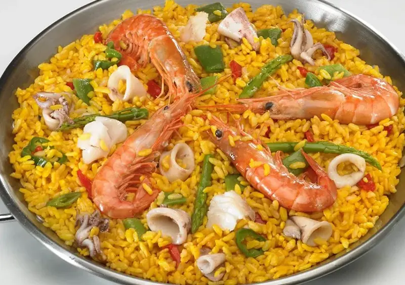
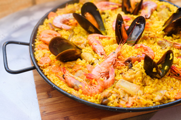
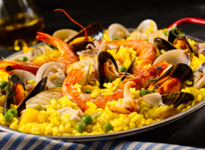
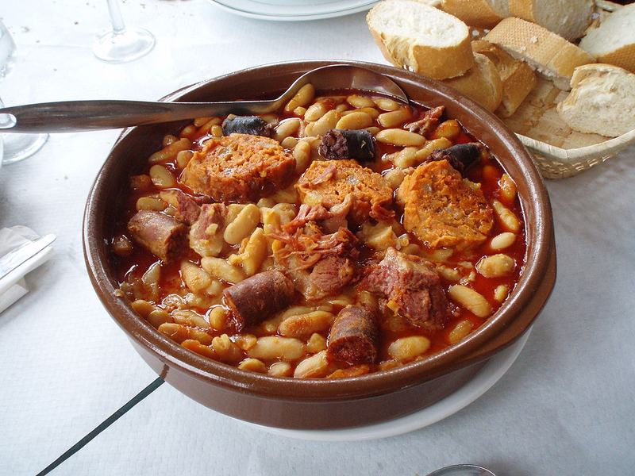
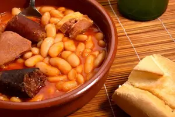
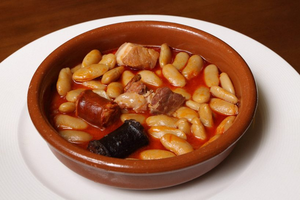
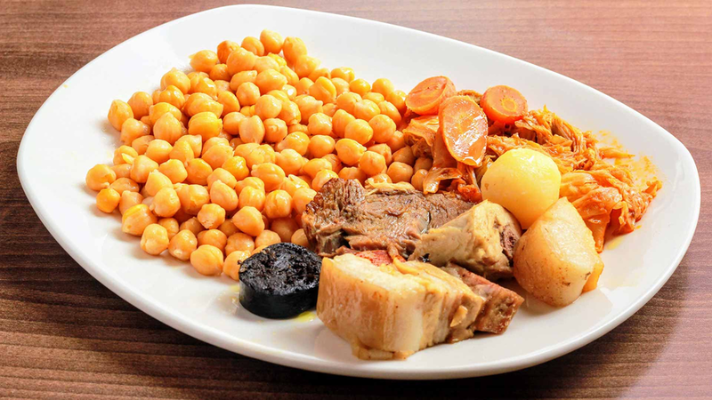
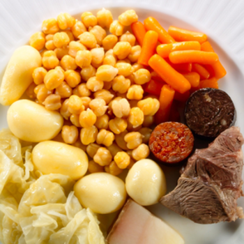

La gastronomía española es una de las más saludables y ricas del mundo. Está claro que en España tenemos materia prima de calidad. Además, tenemos la suerte de poder acompañar nuestra gastronomía con algunos de los mejores vinos del mundo. ¡Mmmm! Si es que como se come en casa en ningún lado.
La palabra paella en su origen designaba a la sartén y, a pesar de sus muchas variaciones, hay un ingrediente que está siempre presente: el arroz. Se dice que la tradicional paella valenciana era una mezcla de arroz con aquellos alimentos que tenían a mano los labradores: pollo, conejo y hortalizas típicas de Valencia como el garrofón o la tabella.
  La paella, uno de los platos más famosos de España. La paella se ha convertido en uno de los iconos de la gastronomía española. Su popularidad creció tanto a lo largo del siglo XX a nivel internacional que hoy en día es un plato que puede encontrarse en los restaurantes de occidente. Esta popularidad ha hecho que la paella haya ido sufriendo transformaciones desde la receta original de la paella valenciana (de pollo, pato, conejo y caracoles) y hayan aparecido variantes que se resumen en: paella marinera, elaborada con una combinación de pescado y/o marisco; la paella mixta en ocasiones también denominada mar y montaña, que consiste en una mezcla de carne y marisco (o pescado), y la paella de montaña, que incorpora distintos productos típicos de cada región tales como costilla, conejo, pollo, butifarra o setas. Por Europa hasta hay restaurantes que le ponen chorizo a la paella. A los valencianos les hierve la sangre solo de pensarlo. Nada como saborearla recién hecha en una terraza a orillas del mar Mediterráneo.
Es el plato típico de Asturias (el plato regional más conocido de la región asturiana), pero su difusión es tan grande en la península ibérica que forma parte de la gastronomía de España más reconocida. Es un plato invernal con un volumen alto en calorías y grasa. Probablemente la fabada debió consumirse en Asturias desde el siglo XVI pero no se encuentran referencias escritas de ella hasta el siglo XIX, en distintas notas de prensa de un diario gijonés en el que se la menciona como un plato popular asturiano.
  Este plato tradicional se elabora con fabes, chorizo, morcilla asturiana (con un ligero sabor ahumado) y cerdo (tocino, principalmente de la zona de la papada). A esta última combinación de ingredientes cárnicos se le llama el compango. A la manera tradicional es un plato de preparación lenta y entre las reglas para comer una buena fabada figura que en ningún caso deben aparecer fabes rotas o deshechas en puré (por eso durante la elaboración nunca se deben remover con la cuchara). Se presta a muchas variantes y a ingredientes añadidos, pero los puristas del plato evitan añadir laurel, ajo y carnes que no sean de cerdo.
Valga este popular plato como representante de los sabrosos cocidos que aporta la gastronomía española: castellano, maragato, lebaniego, montañés, caldo gallego, escudella catalana i Carn d’ Olla, puchero andaluz, olla podrida y cocido con pelotas murciano. La versión con más seguidores sobre el origen del cocido madrileño es que se trata de una evolución de la Olla Podrida Manchega. Este plato se menciona con frecuencia en la literatura del Siglo de Oro como, por ejemplo, en El Quijote. A finales del siglo XVII se le empezó a llamar cocido madrileño.
 Es uno de los platos más completos de la cocina mediterránea, en el que se mezclan un sinfín de ingredientes para hacer frente al invierno: garbanzos, carne gelatinosa, media gallina, chorizo, morcilla, un pie salado de cerdo, una pelota (de carne picada, miga de pan, 1 huevo y especias), una col, cebolla, repollo, judías verdes, arroz, tocino, jamón, aceite y ajo. Con casi tres horas de preparación, el resultado es un potente puchero muy gustoso, del que podrás jactarte cuando lleguen tus invitados.
Copyright © 2022 The amazing food - Todos los derechos reservados.